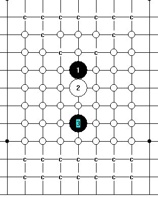

我想做大寒星,大家做到哪里了?
首页
妖刀天下
#1 我想做大寒星,大家做到哪里了? 作者：安娜制作所 发表时间：2010-10-29 8:29:01
=======上图对应的爱五子棋谱代码如下，以便你拆解：========
h8h7h5g7a1f6b1g8c1g5d1h9
======================================================先做这些4,有结论的请提示一下!谢谢
［ 失落刀 于 2010-10-29 12:28:25 时花20金币送鲜花一朵］
#2 Re:我想做大寒星,大家做到哪里了? 作者：安娜制作所 发表时间：2010-10-29 8:36:57

刚开始做已经40M了,标C的已完全终结!
#3 Re:我想做大寒星,大家做到哪里了? 作者：日月丽天 发表时间：2010-10-31 8:26:25
c点指2打必了，那么图上的白点有没有一打必的，有哪些了？
#4 Re:我想做大寒星,大家做到哪里了? 作者：冥王哈迪斯 发表时间：2010-10-31 22:55:23
难啊。。寒星刀，，横星刀，，期待强人了，，
#5 Re:我想做大寒星,大家做到哪里了? 作者：日出333 发表时间：2010-11-1 0:15:55
强人。。加油
#6 Re:我想做大寒星,大家做到哪里了? 作者：安娜制作所 发表时间：2010-11-1 8:56:36
c 点做的一打, 白圈没做呢!先做完一打8,因为听说这个一打还没有终结!如果做了两打的那就会标C2了!
#7 Re:我想做大寒星,大家做到哪里了? 作者：日月丽天 发表时间：2010-11-1 9:19:20
=======上图对应的爱五子棋谱代码如下，以便你拆解：========
h8h7h5g8i6
======================================================这个4，可以用这个5先搞掉了
#8 Re:我想做大寒星,大家做到哪里了? 作者：日月丽天 发表时间：2010-11-1 9:20:09
=======上图对应的爱五子棋谱代码如下，以便你拆解：========
h8h7h5g5i8
======================================================这个4，用这个5可以先搞出一打
#9 Re:我想做大寒星,大家做到哪里了? 作者：安娜制作所 发表时间：2010-11-2 8:36:40
好,先做掉这两个白4!
#10 Re:我想做大寒星,大家做到哪里了? 作者：冥王哈迪斯 发表时间：2010-11-3 0:18:48
帮楼主搞定一个弱四 鼓励 鼓励！~怎么发插件？？？？求救？？？？
=======上图对应的爱五子棋谱代码如下，以便你拆解：========
h8h9h11h7i9
======================================================
#11 Re:我想做大寒星,大家做到哪里了? 作者：冥王哈迪斯 发表时间：2010-11-3 0:28:14
威望不够，，！！！。。日月替我发给楼主把，，。。没别的意思，，贡献自己的绵薄之力罢了，，
#12 Re:我想做大寒星,大家做到哪里了? 作者：日月丽天 发表时间：2010-11-3 9:49:43
代发一个4的一打分支，下载后检查有没有漏洞 小杂耍闲来无事-冥王大寒星刀.rar
小杂耍闲来无事-冥王大寒星刀.rar
#13 Re:我想做大寒星,大家做到哪里了? 作者：日月丽天 发表时间：2010-11-3 10:10:05
=======上图对应的爱五子棋谱代码如下，以便你拆解：========
h8h9h11h7i11a1i10
======================================================另2打
#14 Re:我想做大寒星,大家做到哪里了? 作者：冥王哈迪斯 发表时间：2010-11-3 10:27:02
这个点 是对称的，，2打应该包括了吧？
#15 Re:我想做大寒星,大家做到哪里了? 作者：日月丽天 发表时间：2010-11-3 14:04:22
对称点，应该不能算第2个打，要是的话松月开局就同一意义的点就有4个打
=======上图对应的爱五子棋谱代码如下，以便你拆解：========
h8h9h7h6i7a1i8b1g7c1g8
======================================================